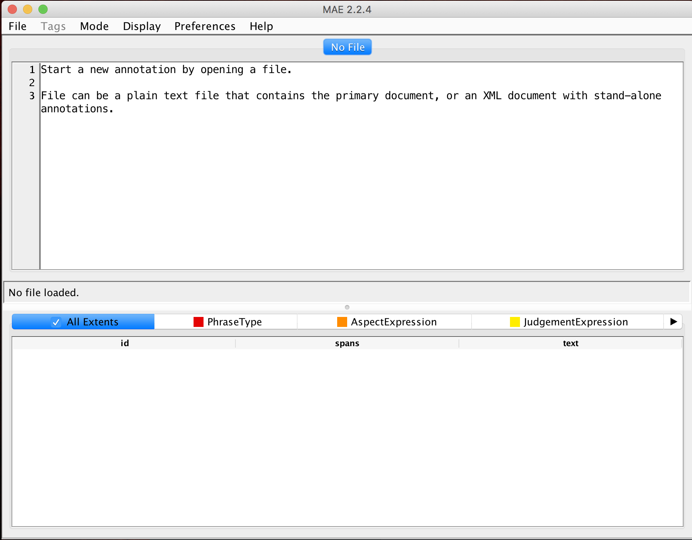
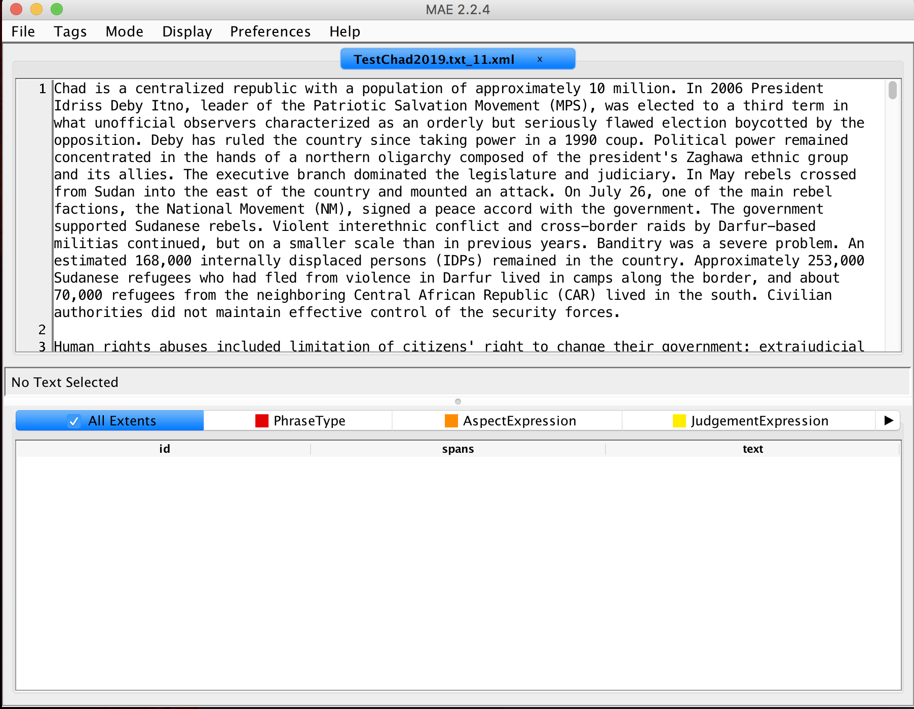
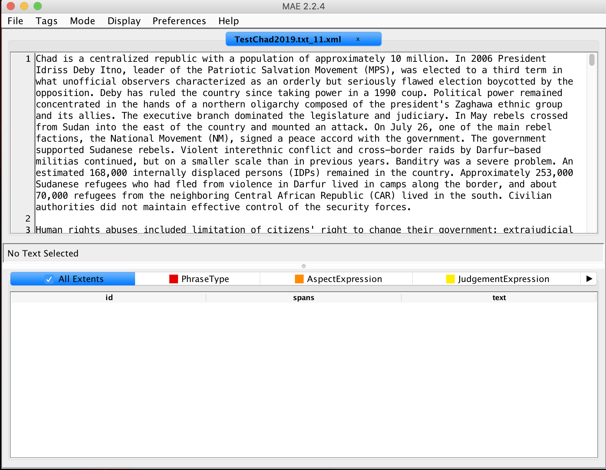

Direction to Annotate using PULSAR-rules
Installation
Download mae-2.2.4-fatjar.jar, from https://github.com/keighrim/mae-annotation/releases
Open the java interface at the terminal: java -jar mae-2.2.4-fatjar.jar
If you get an error you may need to install java and the java jdk. Please install Java version >8. These are available here
If mae opened just fine, then you need to open the document-type definition file by going to File menu (top left),  then select New Task Definition, and find
then select New Task Definition, and find PULSAR.dtd. That should load the possible annotation types, and there should now be different colors and names towards the bottom of the screen, like so: 
Then open the file to annotate, by going to the File menu again, selecting Open Document and selecting your next document.  This is an example of what the resulting screen should look like, but you will have a different document. !
This is an example of what the resulting screen should look like, but you will have a different document. !
Goals
The goals are to mark up human rights reports so that we can identify what aspects of human rights are being judged over time, as well as who are the perpetrators, victims and sources of information are. We have special tags for negation too, as that reverses a judgement.
Definitions
- Aspects of human rights: Rights are moral or legal rules. They are abstract in the sense that a specific person, place or thing is not a right. Privacy is a right. Physical integrity, meaning not having someone threaten, torture or attack you, is a right. The aspects are conceptually separate from the judgements offered on them (See below). Aspects are often noun phrases, but not propoer nouns. There are seven broad classes of rights:
- Physical integrity rights
- Civil liberties
- Political rights
- Government corruption and transparency
- Discrimination, societal abuse and Trafficing in persons
- Worker's rights
- Government attitude towards international and nongovernmental investigations of alleged violations of rights
Judgement of protection or violation of an aspect of human rights: These reports provide information about whether a country, in a given year, has protected or violated specifiv types of rights; and provides information and events related to those claims. A judgement tells us either directly or indirectly whether a right has been violated protected, or possibly that there is no information about this. One way to think about whether a phrase is an aspect of human rights or a judgement on an aspect is to think about whether you could attach multiple different judgements to that expression. For example, in the phrase: Security forces committed widespread torture, the aspect is torture, a form of physical integrity right. We could imagine another sentence that stated, There were no reports that the Security forces used torture, same aspect, different judgement. Judgements are often verbs, adverbs or adjectives.
Perpetrator: These are the people or groups, often proper nouns, who have been the actors in the judged actions. Perpetrators ussually are identified in these documents as having done negative things, but that is not always the case. A group can perpetrate a peace agreement, for example.
Victim: These are people or groups, often proper nouns, who have been acted upon in the judged actions. Victims in these documents are often the ones suffering from the abuse of these rights. However, people can be acted upon in a postive sense (for them), as they could be given immunity by the government.
Source of information on the judgement: While we know the author the reports (eg the US State Department or Amnesty International), often they are writing about others. The source of the judgement is often media reports, other NGOs. They can also be the opposition or even the government. The absence of reports is itself a source. So in the phrase There were no reports that the Security forces used torture, no reports is the source of the information on the judgement.
Location: A specific place that you could point to on a globe, ussually proper nouns, but not always. These can be cites, countries, regions, or specific houses.
Time: A specfic time or date. This helps us track when the reports are talking about past events and when they are talking about current events.
Negation: There are special words that invert a judgement, these negate a judgement. These words are important to our project and we want to capture as many as we can. The government did not protect civil liberties carries a very different judgement as compared to The government did protect civil liberties, because of the negation no.
Phrase type: More generally, there are many phrases or whole sentences that do not offer a clear judgement. In that case, we are not interested in those and they can be tagged as either an old event or fact, a current event or fact, or as ambiguous. For example 10 years ago, the President was elected. is an old fact/event.
Tagging Chucks of Contiguous or Discontinuous Text as Entities
For our purposes text can tell us about any of the previously defined concepts. We have designed tags, also known as entities, for you to use to denote what semantic role a phrase or word is playing in a sentence. These are defined in the PULSAR.dtd file. The point of the MAE software is to allow you to efficiently annotate the text, marking the language in documents with the appropriate tags.
To make a tag, when in normal mode (see next paragraph), simply select the text and then control-click on that highlighted text. Then select the extent tag that is appropriate.
Importantly, tags can be continuous, where you are just highlight from left to right or right to left, contiguous characters and/or white space; or discontinuous, where there is a gap between the words that are part of the same tag. For example, the phrase Extreme surveillance by the government was widespread. The judgement here is discontinuous because it includes extreme and was widespread. In MAE there is a mode for discontinous span selection. Just select Mode, then Switch to discontinous span selection. Then just do command-e to switch back to regular mode, or click on Mode again and then Return to normal mode.
Everytime you tag a section of text, it creates meta data on the tag type, and where the span begins and ends (with multiple values if the span is discontinous). You can see some of this near the bottom of the screen.
To delete a tag. Control-click on it.
One note of warning: it is common when highlighting text to miss the first or last letter of a span, please try and be careful with this.
Tagging Links Between Entities
In addition, we want to identify connections between these tagged chunks of text. Specifically, we want to be able to identify links:
- between a judgement and the aspect of human right the judgement is offered on
- between the perpetrator judged and the judgement of their action
- between the victim of a judged action and the judgement
- between the souce of information for a judgement and the judgement
- between negation and the what is being negated, particularly the judgement
- between a location and what is located there
- between a time what took place at that time
These are each types of relations are links.
To code links, you first need to have the tags/entities coded. When you have the entities all coded for a sentence, and you are ready to create links, select Mode, and then Switch to argument selection mode, to create links you are selecting the arguments. You can also **Switch to argument selection mode" with the command-2 shortcut. In this mode, select anywhere in the tag for the first part of the link and click, then select anywhere in the tag for the second part of the link and click. You should see at least two discontinous highlighted sections. Control-click on one of these, and select the appropriate link. A dialogue will pop up that will let you choose the appropriate link type.
Examples
Some Specific cases
Judgements are often verb phrases and aspects (non-proper) noun phrases that include human rights terms, and perpetrators or victims are noun phrases with people as the root of the terms. For example the sentence:
Security forces committed politically motivated killings.
has politically motivated killings as the aspect, committed as the judgement, and Security forces as the perpetrator. It then has a FromPerpetratorToJudgement link (Security forces,committed) and a FromJudgementToAspect link (committed,politically motivated killings). If a specific person or proper noun is named, that is not an abstract aspect of human rights that is being violated or protected, but instead is usually a victim or a perpetrator.
If is important to keep judgement words, like unlawful, arbitrary, intense and severe in the judgement expressions.
Some expressions are both an aspect and a judgement at once in a sentence. In the phrase: Abuses included killing, killing is both the aspect (within physcial integrity rights) and the judgement, they did it, although that is implied. There is a special extent tag for this: JointJudgementAspectExpression.
Sentences with of can be confusing because the judgement and aspect are often connected in an ambiguous way. In this example:
Civilian authorities did not maintain effective control of the security forces.
One could think of the security forces as the aspect, then the the judgement is did not maintain effective control of. Alternatively, one could think of control of the security forces as the aspect and then the judgement would be did not maintain effective. In this case, the second coding is slightly preferable, but only because control of the security forces is a common phrase and security forces are groups that are more likely to be perpetrators. The civilian government is the perpetrator.
Related to the previous point, keep the phrase rule of law, freedom of speech, freedom of expression, freedom of movement, freedom of assembly, freedom of association, freedom of press etc. together. It is a multiword expression.
When there are two prepositions, as in obstruction of the work of nongovernmental organizations (NGOs), it is important to focus on the verb, here what is being obstructed is some part of an NGO, so the work of nongovernmental organizations (NGOs) is the aspect and the judgement is obstruction of.
Perpetrators in this coding scheme do not alway do negative things. You can perpetrate a protection or a peace accord. Perpetrators are the cause of an effect.
Conversely, victims are the effected party.
Include articles or adjectives in a tag if they would be left dangling ("", "the legislature", "severly violated"). This is particularly important when an adjective intensifies or modifies other words within that expression, as in the last example in the previous sentence.
Code as much as possible. The sentence: In may, rebels crossed from Sudan into the east of the country and attacked could be mistaken for an EventFact tag, but since it involves physical security, attacked is an JointAspectJudgement. In that case, the perpetrator is the rebels, so this is not an EventFact, as the sentence includes a judgement that something happened to influence physical security.
Judgements can involve more than one actor. The sentence one of the main rebel factions signed a peace accord with the government includes the judgement expression signed and the aspect expression peace accord since this is related to physical security. The perpetrators in this case are the rebel groups, since they signed, and the government. So there should be Perpetrator tags on those two actors and FromPerpetratortoJudgement links for each of rebel groups and government to the judgement expression signed.
Some aspects always imply a set or group of victims, like child soldiers, these victims do not need to be tagged separately. So in the phrase, the use of child soldiers, child soldiers is the aspect expression and use of is the judgement.
The phrasing of reports is tricky. A common phrase is There were reports of or There were no reports of. In these cases, were reports or were no reports of, if they are the only judgement-like expressions in the sentence, should be coded as the judgements, and then reports also tagged as the source of the information. Care needs to be taken when linking the correct parts of these instances.
When two actors are mentioned with an and then include them as seperate entities, and with their links. If two actors are mentioned with an or then they should be joined as one extent, since we do not know which one should be used (or does not equal both).
You can use discontinuous extents when necessary. For example, when there is one judgement that is split across the beginning and the end of a sentence.
Questions for future
Some sentences have extensive details about an aspect, in particular. Should allow this be included in an aspect, or should be have to different aspect codings. One for the core abstract aspect and another for the details, and then a link between them? Is this just added complexity?
Add link from an Indirect Aspect to an EventFact to resolve coreferene
Add 148 children were kidnapped as example for JointJudgementAspectExpression, ignore were in coding for efficiency